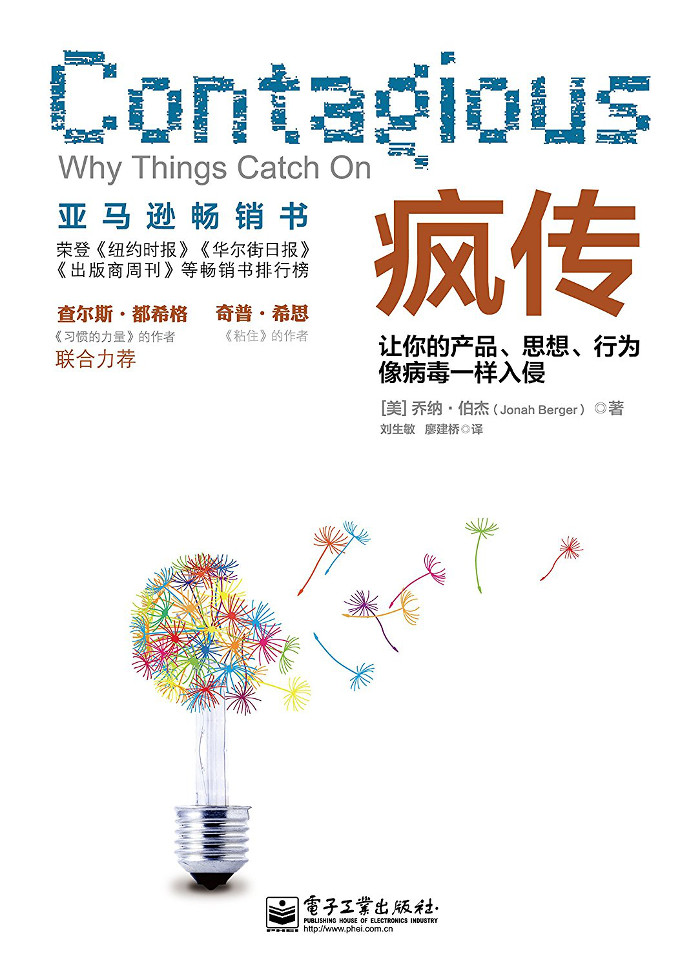

注：【】部分为笔者心得，非原文摘抄。
- 产品和思想变得流行的一个原因就是渐进式改善，另一个原因是价格低廉。
- 有 20%-50%的购买决策主要受到口头传播的影响。
- 口头传播确实比传统广告的传播在两个关键点上更有优势。其一，口头传播并非推销活动，没有强烈的劝说语气，而广告经常会像王婆卖瓜一样自卖自夸。其二，口头传播更加有目的性。另一方面，口头传播能够以观众为导向，直接针对观众的兴趣设计传播内容。
- 口头传播能够帮助公司从可能的网络中获取新的客户资源，这有赖于人们茶余饭后的闲谈与关注。最大的挑战是让他们怎样表述信息最为恰当。
- 因为不能判断社会化媒体就是最佳的评论传播方式，所以在线评论可能会被更多人关注，但线下评论的影响可能更为深远。
- 【有趣的产品理念更有潜力产生口碑营销。】
- 感染力的六个原则：
- 社交货币（Social Currency）
- 尽量使人们谈论我们设计好的概念，就能使之达到我们要求的形象宣传。我们需要洞悉人们的内心深处，让他们感觉到自己进入了他们渴望的世界之中。我们需要调整游戏规则，去迎合人们向身边朋友炫耀身份的需要，构建出他们渴望的形象。
- 诱因（Triggers）
- 用一些刺激物瞬间激发人们的记忆，让他们想到相关的内容。
- 只要身边的人谈论到的事情能够触及朋友的内心，这些朋友就会快速地回想起相关的产品和思想，并且大幅地谈论和宣传。我们应该设计出一种在特定环境下能够激活顾客内心的产品和思想线索。
- 情绪（Emotion）
- 有感染力的内容经常能够激发人们的即时情绪。
- 能触动情绪的事物经常能被大家谈论。
- 公共性（Public）
- 人们只要没有看到相关的事物，是不会轻易模仿的，更不可能让这些事物变得流行。
- 设计一些具备公共应用性的产品和思想。
- 实用价值（Practical Value）
- 向顾客证明产品或思想能够给他们节省时间或者费用，他们就会大力宣传我们的产品或理念。
- 首先应该搞清楚什么东西会让顾客觉得更优质、更加值得信赖，所以应该尽可能地向顾客提供更有性价比的商品。
- 故事（Stories）
- 人们不仅会分享信息，更可能会讲述其中的相关故事。
- 建立像特洛伊木马这样的传奇故事，用来注入我们的产品和思想。
- 社交货币（Social Currency）
- 人们倾向于分享他们所见到的能对自己有益的事物。
- 自由表达和披露信息对自己本身就是一种内在的奖励。
- 人们都倾向于选择标志性的身份信号作为判断身份的最直接的依据。
- 口碑传播主要是为了保持人们对自己的良好印象。
- 通过三种方式来完成社交货币的铸造：
- 发掘标志性的内心世界；
- 撬动游戏杠杆；
- 使人们有自然天成、身历其境的归属感。
- 希望被赞美是人类的一种基本动机。
- 游戏的原理在于应用和本身的设计元素，包括规则和过程，能够让你感到身心愉悦，并心存回味。
- 分散的市场刺激并不能激活我们的购买动机，最关键的刺激发生在消费者接近优惠标准的时候。
- 游戏是通过人际社会比较来完成对玩家的刺激的。
- 因为稀缺性和专用性增加了人们的满足感，所以能促进产品的流行与推广。
- 稀缺性和专用性让人们感觉有归属感，故而激发了人们口口相传的欲望。
- 通过有效地调动人们向他人炫耀的欲望，那些顾客就会愿意为你做任何事情，这当然也包括免费口碑传播，从而让你的产品和思想迅速疯传。
- 市场是传播顾客喜好的地方。
- 有趣而新奇的产品会比令人乏味的产品得到更多的临时口碑传播，但有趣的产品并不一定比乏味的产品的口碑传播时间更长。
- 如果事情具备一定的娱乐性，谈论它的人就会通过口碑传播这些内容而获得别人的肯定。
- 易于理解的思想和观点诱导着人们的行为。
- 被诱导的产品不仅会获得更多的即时口碑传播，也能够增加持续口碑传播的机会。
- 与其寻找引人注目的话题，还不如考虑话题流传的情境。一定要仔细思考这种产品或思想是否每天都能被目标顾客所处的情境诱发出来，而不是考虑的趣味。
- 开发品牌的栖息环境能够大幅地刺激人们的口碑传播行为。
- 刺激的频繁性要与刺激的强度相配合才会有更好的效果。
- 诱因会因为所处的时期不同而有所差别。
- 如果诱因发生的时间或地点错误，就很难奏效。
- 诱因是口碑传播和流行的基础。
- 敬畏之情的确能够增加人们的共享行为。
- 情绪共享具备很强的社会传播性，能够帮助人们维持并增加自己的社会关系。
- 任何事情，只要能激活我们，形成生理唤醒状态，我们的行为就会被触动。
- 当人们感到极大的满足时，人们确实会非常放松，并安于现状。
- 像敬畏的情绪一样，生气和担忧的情绪会增加人们的共享行为，而这正是因为它们能高度唤醒人们的情绪。
- 滑稽的内容之所以被人们共享是因为娱乐也是一种高唤醒情绪。
- 如果能合理地利用消极情绪，实际上也可以激发人们的口碑传播行为。
- 社交媒体使得有共同价值观的个体互相识别，共享各自的信息，并随时协调他们的共同行动计划。
- 情绪驱动人们的行为。
- 视顾客价值为优先考虑的内容。
- 人们会随时随地观察他人的所作所为，并随之模仿。
- 驱动人们相互共享的关键要素就是公共可视性。假如某些东西生来就是可被别人看到的，那么就让它更好地被更多人看到。
- 当产品的可视性强时，社会影响会对人们的购买行为产生更大的作用。
- 可观察到的事物更易于被大家公开讨论。
- 产品或者服务的公共可视性越强，它们对人们行为的激活程度也就越高。
- 使事物具备更多公共性的一种方法就是设计出能为自己做广告的思想。
- 人们之所以去远足的主要理由是想远离尘世，远离城市的繁忙与喧嚣，让自己沉浸在大自然的呵护之中。没有信息提示牌、没有交通灯、没有广告，只有大自然的气息环绕在周围。
- 人们喜欢传递实用的信息，即一些别人能用得上的信息。所以，提供实用的信息会加速事物的传播速度。
- 人们经常违背简单的经济原则去做决策。他们每一次的判断过程与决策结果并不是完全理性和最优的。与之不同的是，人们在考虑决策时往往根据如何接收和处理信息的心理原则来做决定。
- 前景理论的核心理念之一就是人们并非绝对按照经济原则去评价事物，而是根据比较原则或者“参照点”来评价事物。
- 虽然有人气的信息容易被大家所共享，但独特的专业消息更容易像病毒一样传播开来。
- 【相比广告，人们更愿意相信故事。】
- 当产品和思想如此深刻地融入于故事情节中时，人们不可能只谈论故事而不谈论产品。
- 社会影响助推了所有形式的产品、思想和行为的流行趋势。
- 人们会疯狂地传递产品、思想和行为，要归功于以下几个方面：
- 社交货币：我们共享那些能让我们显得更优秀的事情；
- 诱因：顶尖的记忆，风口浪尖的提醒；
- 情绪：当我们关心时，我们会去共享；
- 公共性：构建可视的、正面的事物；
- 实用价值：如果有用，人们会情不自禁地共享；
- 故事：以闲聊为幌子的信息传播。
- 理智的人接受理智的产品、思想和行为。只有掌握了人们口碑传播的心理规律，我们才有能力让产品